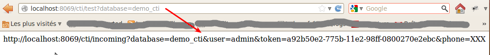

{kind=link}

When CTI program is installed on your PC Descktop, when an incoming call arrive it can be possible to open a Web Browser and launch a specific URL, in this URL it can be possible to pass the phone number in the URL
The phone_cti connector can be analyse the URL and can return a return a redirect to another URL, eg: open the partner form
Each database containt a specific token to identify the query, and must be pass to the URL, be to help to configure we provide a test URL, that return the real URL
Open a web browser, and launch this URL http://localhost:8069/cti/test it open this page
You must provide the database parameter and the name of the database as value like http://localhost:8069/cti/test?database=demo_cti
and see this screenshot
You must copy/paste the URL provide on the CTI component and replace XXX on phone parameter by the substitute value (eg: %1 $1)
For my example, the URL with substitute parameter %1
http://localhost:8069/cti/incoming?database=demo_cti&user=admin&token=a92b50e2-775b-11e2-98ff-0800270e2ebc&phone=%1